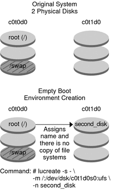

|
|||
|
Part I Upgrading With Solaris Live Upgrade 1. Where to Find Solaris Installation Planning Information 2. Solaris Live Upgrade (Overview) 3. Solaris Live Upgrade (Planning) 4. Using Solaris Live Upgrade to Create a Boot Environment (Tasks) 5. Upgrading With Solaris Live Upgrade (Tasks) 6. Failure Recovery: Falling Back to the Original Boot Environment (Tasks) 7. Maintaining Solaris Live Upgrade Boot Environments (Tasks) 8. x86: Locating the GRUB Menu's menu.lst File (Tasks) 9. Upgrading the Solaris OS on a System With Non-Global Zones Installed 10. Solaris Live Upgrade (Examples) Example of Upgrading With Solaris Live Upgrade Example of Detaching and Upgrading One Side of a RAID-1 Volume (Mirror) Example of Migrating From an Existing Volume to a Solaris Volume Manager RAID-1 Volume 11. Solaris Live Upgrade (Command Reference) |
Example of Creating an Empty Boot Environment and Installing a Solaris Flash ArchiveThe following procedures cover the three-step process:
The lucreate command creates a boot environment that is based on the file systems in the active boot environment. When you use the lucreate command with the -s - option, lucreate quickly creates an empty boot environment. The slices are reserved for the file systems specified, but no file systems are copied. The boot environment is named, but not actually created until installed with a Solaris Flash archive. When the empty boot environment is installed with an archive, file systems are installed on the reserved slices. The boot environment is then activated. To Create an Empty Boot EnvironmentIn this first step, an empty boot environment is created. Slices are reserved for the file systems that are specified, but no copy of file systems from the current boot environment occurs. The new boot environment is named second_disk. # lucreate -s - -m /:/dev/dsk/c0t1d0s0:ufs \ -n second_disk The boot environment is ready to be populated with a Solaris Flash archive. Figure 10-3 shows the creation of an empty boot environment. Figure 10-3 Creating an Empty Boot EnvironmentTo Install a Solaris Flash Archive on the New Boot EnvironmentIn this second step, an archive is installed on the second_disk boot environment that was created in the previous example. The archive is located on the local system. The operating system versions for the -s and -a options are both Solaris Express 5/07 releases. The archive is named Solaris_11.flar. # luupgrade -f -n second_disk \ -s /net/installmachine/export/Solaris_11/OS_image \ -a /net/server/archive/11.flar The boot environment is ready to be activated. To Activate the New Boot EnvironmentIn this last step, the second_disk boot environment is made bootable with the luactivate command. The system is then rebooted and second_disk becomes the active boot environment. # luactivate second_disk # init 6
|
||
|